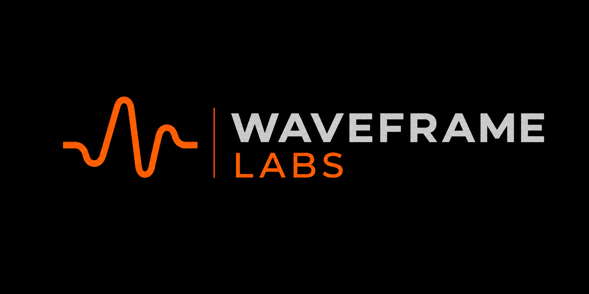

Guard Evaluation Inspector
Execution intake
Load execution inputs, then evaluate.
WAITING

Guard Evaluation Inspector
Load execution inputs, then evaluate.
Reason
Next action
Receipt browser
Multi-run comparison
Operational explainability
Generated execution chronology
Evaluation output
Guard SDK primary path
from guard.sdk import Guard
guard = Guard.local(workspace=".guard-local")
@guard.protect(authority="finance-policy@1.0.0")
def wire_transfer(request):
return execute_transfer(request)Guard SDK intercepts execution before mutation.
CRI-CORE evaluation returns allowed, blocked, or escalated.
Guard emits receipts and saved runs into .guard-local/.
Each evaluation artifact has an artifact manifest, replay basis, and lineage continuity hash.
Artifact Intake